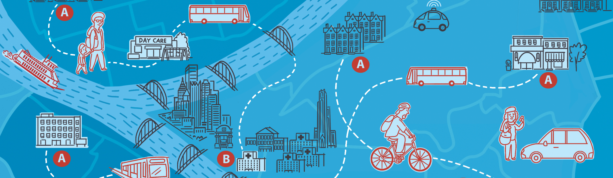

Mobiliti: Co-Design Conference

Mobiliti was a co-design session that brought together employers, mobility service providers and Pittsburgh city residents. I worked on this project with Maya Design and Boston Consulting Group
My work on this project included business development, data visualization, tailoring and preparing materials for the break-out activities, facilitating the sessions, and making a presentation during the general session. I also organized and synthesized the information gathered during the conference so it could be distributed to participants.
The Problem
Mobiliti’s objective was to prove the ROI of reliable transportation for workers in Pittsburgh. Many employers have strict requirements for punctuality and a limited number of days employees can miss before punitive measure are imposed for not meeting those standards. Employer’s ability to staff shift positions can be limited if reliable transportation is not met, which adds expenses for turnover and a lack of experienced workers.
Insufficient or limited transportation alternatives hurts employees as well as employers. Without reliable transportation for people to get to and from work, their job opportunities and potential earning power is constrained, especially for those entering the work force and lower income earners.
It’s important to note that a sizable percentage of the target workforce does not have access to a car or reliable transportation for their daily commute to work.
Business Development and Data Visualization
I was the third person to join the BCG/Maya Design Team working on the Mobiliti project. My initial assignment was to create a market analysis of B2B mobility offerings using data visualization to baseline reliable transportation alternatives available for employees commuting to work.
The data visualization led directly into my business development work. I contacted different mobility service providers to better understand how they could benefit local employers as well their potential pricing and operating locations.
Organizations that I brought to the event included: Ford Smart Mobility, May Mobility, Via and our final keynote speakers from the City of Southbend/Bloomberg’s Mayor’s Challenge.
The data visualization ultimately turned into a lumascape of mobility providers that could provide alternative commuting options for local companies and employees. The lumascape helps get an overview of the transportation market, highlighting different market segments and solutions. It was difficult to get a current and viable list of transportation companies in the area since many firms get acquired or go out of business each year. My goal was to present the current offerings for commuting options.
B2B Mobility LumascapeCo-Design Preparations
I travelled from Dallas, Texas to Pittsburgh, Pennsylvania to prepare materials for the two day co-design session with Maya Design.
The conference had 150+ participants which included employers (PNC, PJ Dick, Giant Eagle), mobility provers (Uber, SPLT, Volkswagen, Via), city entities (SFMTA, Traffic21, City of Detroit), and city residents (Homewood Children’s Village, Trade Institute Pittsburgh, Community Kitchen Pittsburgh). We organized the attendees into 20 groups with 8 members each that were grouped together for a spectrum of expertise.
Each group had a Pittsburgh city resident, a mobility service provider and government/ nonprofit members. Carnegie Mellon University MBA and technology students also volunteered to help facilitate the event by joining the different groups.
We planned and prepared materials for four co-design activities including: Radar, Day in the Life, Pilot Posters and a Round Robin where we discussed and summarized the pilots into elevator pitches.
I prepared a set of transportation cards for each of the groups. These cards were to help reference the current transportations that can be used immediately and identify mobility companies attending the event.
Transportation Cards1. Radar
For the Radars, attendees rated aspects of the job commute and how significantly it affects them. This activity was beneficial because it naturally let each attendee state their personal experiences in commuting and allowed them to introduce their expertise.
Our main goal for this activity was to create an open atmosphere for attendees to describe their frustrations in commuting to work. Limited transportation alternatives can have a significant impact on businesses and employees. In spite of the emotions and frustrations of this topic, we worked hard to avoid provoking defensive reactions in confronting this problem.
2. Day in the Life
Day in the Life helps demonstrate the daily struggles in commuting to work. This activity allowed Pittsburgh city residents to tell their stories and struggles in getting to work on time.
Many city residents live far away from their jobs and have many variables affecting their commute such as: limited bus schedules, getting kids ready for school and inclement weather. We used this activity to set expectations for the group beyond a routine commute consisting of a reliable car and available parking.
3. Pilot Posters
The second day focused on refining the ideation sessions. This time was designated for groups to reflect on their discussions and consolidate insights gained with other attendees in order to identify a problem area to test a prototype.
The posters were organized to help groups focus on a specific need and location where a potential solution could be tested. Our goal was to connect the groups with other transportation groups (government agencies, transportation startups, etc.) in order to create prototypes that could be tested at the beginning of 2019. The posters also required groups to estimate potential cost savings and schedules for the test phase.
4. Round Robin

What makes Mobiliti stand apart is that we aimed to bring many people in the transportation industry to listen to ordinary problems and ideate realistic solutions. We wanted to leverage that knowledge to pressure test the ideas to find realistic solutions that could be implemented in early 2019.
On the second day of the conference, the 20 groups helped the others in structured collaboration sessions. Groups introduced their ideas to fresh eyes and enabled other attendees to identify potential oversights, edge-cases, ideas that showed potential, and discern the better ideas and proposals from the various teams.
Co-Design Facilitation
The two days of activities was a large time commitment for our attendees. It was critical for the activities to run smoothly and demonstrate that everybody in attendance had the expertise to contribute. Our main goal in tailoring the activities and group members was to give them the tools needed to learn about the problem and work through a solution.
As I was facilitating the sessions, I wanted the various groups to find the foundation of their ideas and ask relevant questions enabling team members to focus their discussions. As the pilots became more robust, I tended to ask questions to think of edge-cases or undefined concepts that could be further refined.
Pilot Synthesis
After the conference concluded, I took photos of the Day in the Life and Pilot Poster activities, categorized them into their respective group numbers and added notes regarding team members, key stakeholders, key issues and objectives.
Reflection
Most of my time on this project was spent working remotely, primarily focused on business development. I learned a lot during this project, particularly related to the importance of time management.
During the business development phase, I also worked on social outreach and data visualization. None of the specific tasks were overly time intensive, so in retrospect I should have switched between them more frequently throughout the day.
One of my key objectives was to create the mobility lumascape. I find the layouts to these documents difficult to discern important information. I collected enough information to also create a document that outlined the types of transportation services available, costs and current operating locations. Moving to a more interactive document would be a boon to organizations that want to invest in transportation services but struggle to understand transportation needs, available solutions, and identify companies that have been acquired or went out of business